CODING AGENTS AS PIXEL WORLD MODELS
traex/GPT-5.6-Sol · common50_0016
点击播放 · 原生 RGB 像素
逐轮保存的候选
回放视频、检查图与代码变化。
每份候选均可单独播放。实际图片检查记录在下方工具轨迹中。
候选 01播放与检查图
点击播放 · 原生 RGB 像素

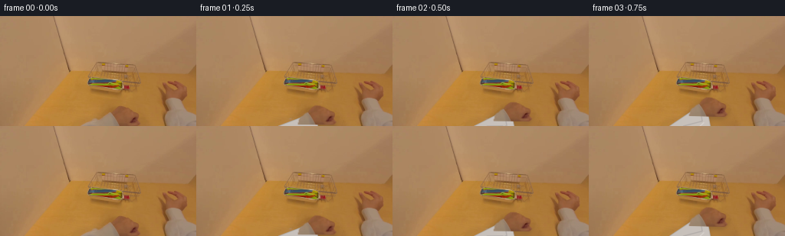
展开代码变化
--- 上一保存版本
+++ 本次保存版本
@@ -0,0 +1,205 @@
+from pathlib import Path
+import numpy as np
+import cv2
+from PIL import Image
+import artifact_io
+
+CASE_DIR = Path(__file__).resolve().parent
+W, H = 256, 144
+N = 20
+
+
+def smoothstep(x):
+ x = float(np.clip(x, 0.0, 1.0))
+ return x * x * (3.0 - 2.0 * x)
+
+
+def poly_mask(points, blur=0.0):
+ m = np.zeros((H, W), np.uint8)
+ cv2.fillPoly(m, [np.asarray(points, np.int32)], 255)
+ if blur:
+ m = cv2.GaussianBlur(m, (0, 0), blur)
+ return m.astype(np.float32) / 255.0
+
+
+def alpha_blend(dst, src, alpha):
+ a = np.clip(alpha[..., None], 0.0, 1.0)
+ return dst * (1.0 - a) + src * a
+
+
+def warp_layer(rgb, alpha, dx, dy, angle=0.0, scale=1.0, center=(160, 132)):
+ M = cv2.getRotationMatrix2D(center, angle, scale)
+ M[0, 2] += dx
+ M[1, 2] += dy
+ wrgb = cv2.warpAffine(rgb, M, (W, H), flags=cv2.INTER_CUBIC,
+ borderMode=cv2.BORDER_REFLECT_101)
+ wa = cv2.warpAffine(alpha, M, (W, H), flags=cv2.INTER_CUBIC,
+ borderMode=cv2.BORDER_CONSTANT, borderValue=0)
+ return wrgb.astype(np.float32), np.clip(wa, 0, 1)
+
+
+def draw_sleeve(frame, wrist_l, wrist_r, reach, pull):
+ """Soft, shaded first-person sleeve joining the animated hand to frame bottom."""
+ S = 4
+ canvas = np.zeros((H*S, W*S, 3), np.uint8)
+ mask = np.zeros((H*S, W*S), np.uint8)
+ # The arm shifts naturally from lower-left on approach toward center on retrieval.
+ bl = (int((103 + 15*pull)*S), H*S + 5)
+ br = (int((159 + 23*pull)*S), H*S + 5)
+ pts = np.array([bl, br,
+ (int(wrist_r[0]*S), int(wrist_r[1]*S)),
+ (int(wrist_l[0]*S), int(wrist_l[1]*S))], np.int32)
+ cv2.fillPoly(mask, [pts], 255)
+ # warm white fabric gradient with subtle directional shading
+ yy, xx = np.mgrid[:H*S, :W*S]
+ centerline = (wrist_l[0] + wrist_r[0]) * .5 * S
+ shade = np.clip((xx-centerline)/(65*S), -1, 1)
+ fabric = np.empty_like(canvas)
+ fabric[..., 0] = np.clip(201 + 5*shade, 0, 255)
+ fabric[..., 1] = np.clip(194 + 4*shade, 0, 255)
+ fabric[..., 2] = np.clip(188 + 3*shade, 0, 255)
+ # shadow down the left seam and highlight through the middle
+ cv2.polylines(fabric, [pts], True, (171, 164, 159), max(1, 1*S), cv2.LINE_AA)
+ # cloth creases, deliberately restrained at this resolution
+ crease = (177, 171, 168)
+ if reach > .12:
+ p1 = np.array([[int((bl[0]/S+20)*S), H*S],
+ [int((wrist_l[0]+7)*S), int((wrist_l[1]+18)*S)],
+ [int((wrist_l[0]+5)*S), int((wrist_l[1]+7)*S)]], np.int32)
+ cv2.polylines(fabric, [p1], False, crease, 1*S, cv2.LINE_AA)
+ p2 = np.array([[int((br[0]/S-14)*S), H*S],
+ [int((wrist_r[0]-5)*S), int((wrist_r[1]+15)*S)]], np.int32)
+ cv2.polylines(fabric, [p2], False, (217, 211, 206), 1*S, cv2.LINE_AA)
+ fabric = cv2.GaussianBlur(fabric, (0,0), .28*S)
+ small_rgb = cv2.resize(fabric, (W,H), interpolation=cv2.INTER_AREA).astype(np.float32)
+ small_a = cv2.resize(mask, (W,H), interpolation=cv2.INTER_AREA).astype(np.float32)/255.0
+ # modest edge softness, consistent with source focus
+ small_a = cv2.GaussianBlur(small_a, (0,0), .35)
+ return alpha_blend(frame, small_rgb, small_a), small_a
+
+
+def add_shadow(frame, alpha, dx, dy, strength=0.22, blur=3.0):
+ M = np.float32([[1,0,dx],[0,1,dy]])
+ sh = cv2.warpAffine(alpha, M, (W,H), flags=cv2.INTER_LINEAR,
+ borderMode=cv2.BORDER_CONSTANT, borderValue=0)
+ sh = cv2.GaussianBlur(sh, (0,0), blur)
+ dark = np.zeros_like(frame)
+ dark[...,0], dark[...,1], dark[...,2] = 83, 60, 42
+ return alpha_blend(frame, dark, np.clip(sh*strength,0,1))
+
+
+def fingertip_layer(frame, tx, ty, scale, amount):
+ if amount <= 0:
+ return frame
+ S=4
+ rgba=np.zeros((H*S,W*S,4),np.uint8)
+ # Two bent fingertips over the utensil handles. Warm tones sampled from source hand.
+ for k,(ox,oy,ang) in enumerate([(158,88,-18),(163,91,-23)]):
+ c=(int((ox+tx)*S),int((oy+ty)*S))
+ axes=(int((2.4+0.2*k)*scale*S),int((5.5-0.4*k)*scale*S))
+ cv2.ellipse(rgba,c,axes,ang,0,360,(151,98,64,int(235*amount)),cv2.FILLED,cv2.LINE_AA)
+ # tiny soft highlight and crease at the curled tip
+ cv2.ellipse(rgba,(c[0]-S,c[1]-2*S),(max(1,S//2),max(1,S)),ang,0,360,
+ (177,121,82,int(100*amount)),cv2.FILLED,cv2.LINE_AA)
+ cv2.ellipse(rgba,(c[0],c[1]+3*S),(axes[0],max(1,S//2)),ang,0,180,
+ (101,58,45,int(75*amount)),1*S,cv2.LINE_AA)
+ rgb=cv2.resize(rgba[...,:3],(W,H),interpolation=cv2.INTER_AREA).astype(np.float32)
+ a=cv2.resize(rgba[...,3],(W,H),interpolation=cv2.INTER_AREA).astype(np.float32)/255.0
+ return alpha_blend(frame,rgb,a)
+
+
+def generate():
+ src = np.asarray(Image.open(CASE_DIR/'first_frame.png').convert('RGB'), dtype=np.uint8)
+ srcf = src.astype(np.float32)
+
+ # Isolate the real lower-center hand. The soft polygon follows its visible silhouette.
+ hand_pts = [(133,144),(135,135),(141,130),(146,127),(149,122),(154,119),
+ (161,119),(167,121),(172,124),(178,124),(184,128),(187,133),
+ (185,138),(180,143)]
+ hand_a = poly_mask(hand_pts, .65)
+
+ # Remove the original lower hand/sleeve to reveal a continuous tabletop for motion.
+ remove_pts = [(101,144),(105,139),(122,135),(135,130),(144,124),(150,119),
+ (160,117),(170,120),(179,124),(187,129),(190,137),(188,144)]
+ rm = (poly_mask(remove_pts, 0) * 255).astype(np.uint8)
+ # Texture synthesis from neighboring pixels. Telea keeps the table's soft grain and gradient.
+ no_hand_bgr = cv2.inpaint(cv2.cvtColor(src,cv2.COLOR_RGB2BGR), rm, 5, cv2.INPAINT_TELEA)
+ no_hand = cv2.cvtColor(no_hand_bgr,cv2.COLOR_BGR2RGB).astype(np.float32)
+
+ # Color-select the stacked blue, green, yellow and red plastic utensils inside a tight ROI.
+ hsv = cv2.cvtColor(src, cv2.COLOR_RGB2HSV)
+ roi = np.zeros((H,W),np.uint8)
+ cv2.fillPoly(roi,[np.array([(113,80),(160,81),(171,91),(171,98),(153,97),(113,93)],np.int32)],255)
+ hue, sat, val = hsv[...,0], hsv[...,1], hsv[...,2]
+ colorful = ((sat > 88) & (val > 65) & ((hue < 14) | (hue > 24))).astype(np.uint8)*255
+ utensil_hard = cv2.bitwise_and(colorful, roi)
+ utensil_hard = cv2.morphologyEx(utensil_hard, cv2.MORPH_CLOSE, np.ones((3,3),np.uint8))
+ utensil_hard = cv2.dilate(utensil_hard, np.ones((2,2),np.uint8), iterations=1)
+ utensil_a = cv2.GaussianBlur(utensil_hard.astype(np.float32)/255.0,(0,0),.5)
+
+ # Clean tray interior revealed as the bundle is removed; inpaint only colored plastic pixels.
+ clean_bgr = cv2.inpaint(cv2.cvtColor(no_hand.astype(np.uint8),cv2.COLOR_RGB2BGR),
+ utensil_hard, 3, cv2.INPAINT_TELEA)
+ clean = cv2.cvtColor(clean_bgr,cv2.COLOR_BGR2RGB).astype(np.float32)
+
+ frames=[]
+ for i in range(N):
+ if i == 0:
+ frames.append(src.copy())
+ continue
+
+ # Approach occupies the first half; removal/lift occupies the second half.
+ reach = smoothstep(i/8.0)
+ pull = smoothstep((i-9)/10.0)
+ grip = smoothstep((i-6)/3.0)
+
+ # Hand reaches up-left from the viewer, then comes down-right toward the camera.
+ dx = -6.0*reach + 31.0*pull
+ lift_arc = -5.0*np.sin(np.pi*pull)
+ dy = -39.0*reach + 30.0*pull + lift_arc
+ angle = -4.5*reach + 7.0*pull
+ hand_scale = 1.0 + .10*pull
+
+ # Keep original utensils perfectly stable through approach; reveal clean tray upon removal.
+ erase = pull
+ base = no_hand*(1.0-erase*utensil_a[...,None]) + clean*(erase*utensil_a[...,None])
+
+ # Hand/arm cast a soft contact shadow on the wooden table.
+ wh_rgb, wh_a = warp_layer(srcf, hand_a, dx, dy, angle, hand_scale)
+ base = add_shadow(base, wh_a, -3, 4 + int(2*pull), strength=.27, blur=3.0+1.5*pull)
+
+ wrist_l = (143+dx, 132+dy)
+ wrist_r = (157+dx, 137+dy)
+ frame, sleeve_a = draw_sleeve(base, wrist_l, wrist_r, reach, pull)
+
+ # Once grasped, transport the real source utensil pixels with a small lift and scale-up.
+ if pull > 0:
+ udx = 31.0*pull
+ udy = 30.0*pull + lift_arc
+ uscale = 1.0 + .10*pull
+ urgb, ua = warp_layer(srcf, utensil_a, udx, udy, 6.0*pull, uscale, center=(157,89))
+ # lifted bundle shadow separates it from tray/table
+ frame = add_shadow(frame, ua, -2, 3+int(3*pull), strength=.24, blur=2.0+2.5*pull)
+ frame = alpha_blend(frame, urgb, ua)
+
+ # Real source hand sits above the bundle; its original photographic shading is retained.
+ frame = alpha_blend(frame, wh_rgb, wh_a)
+
+ # Curled fingertips make the grasp readable while covering the utensil handles.
+ ftx = 31.0*pull
+ fty = 30.0*pull + lift_arc
+ frame = fingertip_layer(frame, ftx, fty, 1+.1*pull, grip)
+
+ # Very mild camera exposure breathing avoids a frozen-photo background without geometric wobble.
+ breathe = 1.0 + 0.004*np.sin(i*.72)
+ frame = np.clip(frame*breathe,0,255)
+ frames.append(frame.astype(np.uint8))
+
+ frames=np.stack(frames,axis=0)
+ # Contract invariant: exact source first frame.
+ frames[0]=src
+ return frames
+
+
+if __name__ == '__main__':
+ artifact_io.save(generate(), CASE_DIR)
候选 02播放与检查图
点击播放 · 原生 RGB 像素
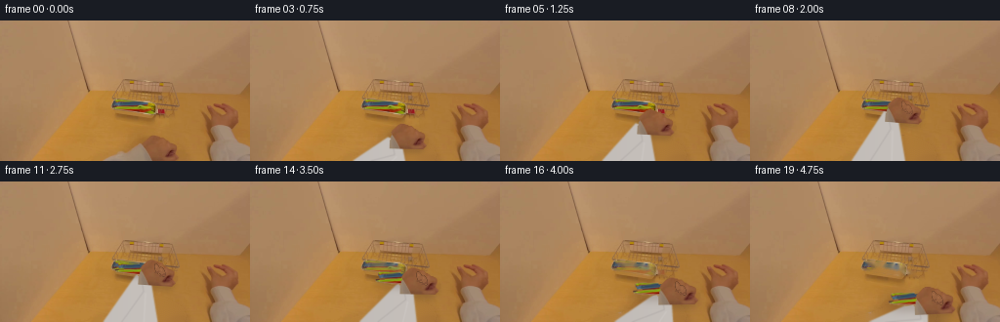
展开代码变化
--- 上一保存版本
+++ 本次保存版本
@@ -41,7 +41,6 @@
def draw_sleeve(frame, wrist_l, wrist_r, reach, pull):
"""Soft, shaded first-person sleeve joining the animated hand to frame bottom."""
S = 4
- canvas = np.zeros((H*S, W*S, 3), np.uint8)
mask = np.zeros((H*S, W*S), np.uint8)
# The arm shifts naturally from lower-left on approach toward center on retrieval.
bl = (int((103 + 15*pull)*S), H*S + 5)
@@ -54,27 +53,26 @@
yy, xx = np.mgrid[:H*S, :W*S]
centerline = (wrist_l[0] + wrist_r[0]) * .5 * S
shade = np.clip((xx-centerline)/(65*S), -1, 1)
- fabric = np.empty_like(canvas)
- fabric[..., 0] = np.clip(201 + 5*shade, 0, 255)
- fabric[..., 1] = np.clip(194 + 4*shade, 0, 255)
- fabric[..., 2] = np.clip(188 + 3*shade, 0, 255)
- # shadow down the left seam and highlight through the middle
- cv2.polylines(fabric, [pts], True, (171, 164, 159), max(1, 1*S), cv2.LINE_AA)
+ fabric = np.empty((H*S,W*S,3),np.uint8)
+ fabric[..., 0] = np.clip(198 + 5*shade, 0, 255)
+ fabric[..., 1] = np.clip(192 + 4*shade, 0, 255)
+ fabric[..., 2] = np.clip(187 + 3*shade, 0, 255)
+ # Low-contrast seams and folds; source clothing is soft and out of focus.
# cloth creases, deliberately restrained at this resolution
crease = (177, 171, 168)
if reach > .12:
p1 = np.array([[int((bl[0]/S+20)*S), H*S],
[int((wrist_l[0]+7)*S), int((wrist_l[1]+18)*S)],
[int((wrist_l[0]+5)*S), int((wrist_l[1]+7)*S)]], np.int32)
- cv2.polylines(fabric, [p1], False, crease, 1*S, cv2.LINE_AA)
+ cv2.polylines(fabric, [p1], False, crease, max(1,S//2), cv2.LINE_AA)
p2 = np.array([[int((br[0]/S-14)*S), H*S],
[int((wrist_r[0]-5)*S), int((wrist_r[1]+15)*S)]], np.int32)
- cv2.polylines(fabric, [p2], False, (217, 211, 206), 1*S, cv2.LINE_AA)
- fabric = cv2.GaussianBlur(fabric, (0,0), .28*S)
+ cv2.polylines(fabric, [p2], False, (207, 202, 198), max(1,S//2), cv2.LINE_AA)
+ fabric = cv2.GaussianBlur(fabric, (0,0), .55*S)
small_rgb = cv2.resize(fabric, (W,H), interpolation=cv2.INTER_AREA).astype(np.float32)
small_a = cv2.resize(mask, (W,H), interpolation=cv2.INTER_AREA).astype(np.float32)/255.0
# modest edge softness, consistent with source focus
- small_a = cv2.GaussianBlur(small_a, (0,0), .35)
+ small_a = cv2.GaussianBlur(small_a, (0,0), .7)
return alpha_blend(frame, small_rgb, small_a), small_a
@@ -112,11 +110,19 @@
src = np.asarray(Image.open(CASE_DIR/'first_frame.png').convert('RGB'), dtype=np.uint8)
srcf = src.astype(np.float32)
- # Isolate the real lower-center hand. The soft polygon follows its visible silhouette.
- hand_pts = [(133,144),(135,135),(141,130),(146,127),(149,122),(154,119),
- (161,119),(167,121),(172,124),(178,124),(184,128),(187,133),
- (185,138),(180,143)]
- hand_a = poly_mask(hand_pts, .65)
+ # Isolate the real lower-center hand. GrabCut follows the photographic silhouette
+ # much more closely than a coarse polygon (especially around the thumb side).
+ gc = np.zeros((H,W),np.uint8)
+ hand_pts = [(132,144),(135,136),(142,130),(147,126),(149,121),(156,118),
+ (164,119),(170,122),(176,124),(181,124),(187,130),(188,136),(183,143)]
+ cv2.fillPoly(gc,[np.asarray(hand_pts,np.int32)],cv2.GC_PR_FGD)
+ cv2.fillPoly(gc,[np.asarray([(145,137),(147,129),(153,122),(163,121),(173,126),
+ (183,129),(184,137),(179,142)],np.int32)],cv2.GC_FGD)
+ bg_model=np.zeros((1,65),np.float64); fg_model=np.zeros((1,65),np.float64)
+ cv2.grabCut(cv2.cvtColor(src,cv2.COLOR_RGB2BGR),gc,None,bg_model,fg_model,5,
+ cv2.GC_INIT_WITH_MASK)
+ hand_a = ((gc==cv2.GC_FGD)|(gc==cv2.GC_PR_FGD)).astype(np.float32)
+ hand_a = cv2.GaussianBlur(hand_a,(0,0),.45)
# Remove the original lower hand/sleeve to reveal a continuous tabletop for motion.
remove_pts = [(101,144),(105,139),(122,135),(135,130),(144,124),(150,119),
候选 03播放与检查图
点击播放 · 原生 RGB 像素
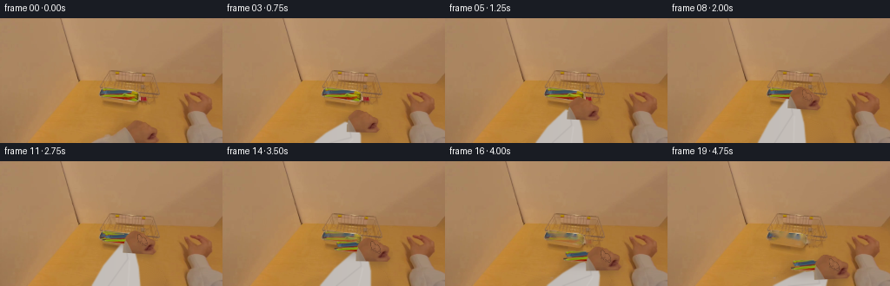
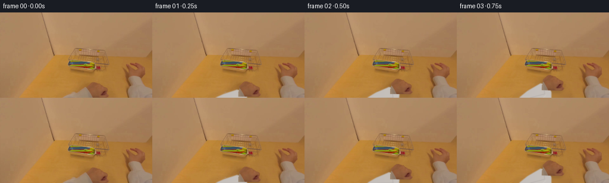
展开代码变化
--- 上一保存版本
+++ 本次保存版本
@@ -45,9 +45,14 @@
# The arm shifts naturally from lower-left on approach toward center on retrieval.
bl = (int((103 + 15*pull)*S), H*S + 5)
br = (int((159 + 23*pull)*S), H*S + 5)
- pts = np.array([bl, br,
+ # A gently tapered/curved cuff rather than a triangular quadrilateral.
+ ml = ((bl[0] + int(wrist_l[0]*S))//2 - 3*S,
+ (bl[1] + int(wrist_l[1]*S))//2)
+ mr = ((br[0] + int(wrist_r[0]*S))//2 + 2*S,
+ (br[1] + int(wrist_r[1]*S))//2)
+ pts = np.array([bl, br, mr,
(int(wrist_r[0]*S), int(wrist_r[1]*S)),
- (int(wrist_l[0]*S), int(wrist_l[1]*S))], np.int32)
+ (int(wrist_l[0]*S), int(wrist_l[1]*S)), ml], np.int32)
cv2.fillPoly(mask, [pts], 255)
# warm white fabric gradient with subtle directional shading
yy, xx = np.mgrid[:H*S, :W*S]
可观测工具轨迹
实际执行的命令与返回图片。
命令 1exit 0
/bin/bash -lc "cat prompt.txt && printf '\\n--- GENERATION_RULES.md ---\\n' && cat GENERATION_RULES.md"
命令 2exit 0
/bin/bash -lc "find . -maxdepth 2 -type f -printf '%p\\n' | sort && printf '\\n--- tools ---\\n' && command -v ffmpeg || true && command -v python3 || true"
命令 3exit 0
/bin/bash -lc "cat task_spec.json && printf '\\n--- artifact_io.py ---\\n' && sed -n '1,240p' artifact_io.py"
命令 4exit 0
/bin/bash -lc "python3 - <<'PY'
from PIL import Image
im=Image.open('first_frame.png')
print(im.mode, im.size)
print(im.getpixel((0,0)), im.getpixel((128,72)), im.getpixel((255,143)))
PY"命令 5exit 0
/bin/bash -lc "python3 - <<'PY'
try:
import cv2; print('cv2',cv2.__version__)
except Exception as e: print('no cv2',e)
PY"命令 6exit 0
/bin/bash -lc "python3 - <<'PY'
from PIL import Image
im=Image.open('first_frame.png')
im.crop((100,45,256,144)).resize((624,396)).save('.tmp/crop.png')
PY"命令 7exit 0
/bin/bash -lc "python3 - <<'PY'
import cv2, numpy as np
im=cv2.imread('first_frame.png'); hsv=cv2.cvtColor(im,cv2.COLOR_BGR2HSV)
for y in range(78,101,3):
print('y',y, [(x, im[y,x].tolist(),hsv[y,x].tolist()) for x in range(114,185,8)])
PY"命令 8exit 0
/bin/bash -lc "python3 - <<'PY'
from PIL import Image
im=Image.open('first_frame.png')
for p in [(160,128),(170,130),(175,137),(150,133),(224,96),(232,99),(218,110)]: print(p,im.getpixel(p))
PY"命令 9exit 0
/bin/bash -lc "cat > generate.py <<'PY'
from pathlib import Path
import numpy as np
import cv2
from PIL import Image
import artifact_io
CASE_DIR = Path(__file__).resolve().parent
W, H = 256, 144
N = 20
def smoothstep(x):
x = float(np.clip(x, 0.0, 1.0))
return x * x * (3.0 - 2.0 * x)
def poly_mask(points, blur=0.0):
m = np.zeros((H, W), np.uint8)
cv2.fillPoly(m, [np.asarray(points, np.int32)], 255)
if blur:
m = cv2.GaussianBlur(m, (0, 0), blur)
return m.astype(np.float32) / 255.0
def alpha_blend(dst, src, alpha):
a = np.clip(alpha[..., None], 0.0, 1.0)
return dst * (1.0 - a) + src * a
def warp_layer(rgb, alpha, dx, dy, angle=0.0, scale=1.0, center=(160, 132)):
M = cv2.getRotationMatrix2D(center, angle, scale)
M[0, 2] += dx
M[1, 2] += dy
wrgb = cv2.warpAffine(rgb, M, (W, H), flags=cv2.INTER_CUBIC,
borderMode=cv2.BORDER_REFLECT_101)
wa = cv2.warpAffine(alpha, M, (W, H), flags=cv2.INTER_CUBIC,
borderMode=cv2.BORDER_CONSTANT, borderValue=0)
return wrgb.astype(np.float32), np.clip(wa, 0, 1)
def draw_sleeve(frame, wrist_l, wrist_r, reach, pull):
\"\"\"Soft, shaded first-person sleeve joining the animated hand to frame bottom.\"\"\"
S = 4
canvas = np.zeros((H*S, W*S, 3), np.uint8)
mask = np.zeros((H*S, W*S), np.uint8)
# The arm shifts naturally from lower-left on approach toward center on retrieval.
bl = (int((103 + 15*pull)*S), H*S + 5)
br = (int((159 + 23*pull)*S), H*S + 5)
pts = np.array([bl, br,
(int(wrist_r[0]*S), int(wrist_r[1]*S)),
(int(wrist_l[0]*S), int(wrist_l[1]*S))], np.int32)
cv2.fillPoly(mask, [pts], 255)
# warm white fabric gradient with subtle directional shading
yy, xx = np.mgrid[:H*S, :W*S]
centerline = (wrist_l[0] + wrist_r[0]) * .5 * S
shade = np.clip((xx-centerline)/(65*S), -1, 1)
fabric = np.empty_like(canvas)
fabric[..., 0] = np.clip(201 + 5*shade, 0, 255)
fabric[..., 1] = np.clip(194 + 4*shade, 0, 255)
fabric[..., 2] = np.clip(188 + 3*shade, 0, 255)
# shadow down the left seam and highlight through the middle
cv2.polylines(fabric, [pts], True, (171, 164, 159), max(1, 1*S), cv2.LINE_AA)
# cloth creases, deliberately restrained at this resolution
crease = (177, 171, 168)
if reach > .12:
p1 = np.array([[int((bl[0]/S+20)*S), H*S],
[int((wrist_l[0]+7)*S), int((wrist_l[1]+18)*S)],
[int((wrist_l[0]+5)*S), int((wrist_l[1]+7)*S)]], np.int32)
cv2.polylines(fabric, [p1], False, crease, 1*S, cv2.LINE_AA)
p2 = np.array([[int((br[0]/S-14)*S), H*S],
[int((wrist_r[0]-5)*S), int((wrist_r[1]+15)*S)]], np.int32)
cv2.polylines(fabric, [p2], False, (217, 211, 206), 1*S, cv2.LINE_AA)
fabric = cv2.GaussianBlur(fabric, (0,0), .28*S)
small_rgb = cv2.resize(fabric, (W,H), interpolation=cv2.INTER_AREA).astype(np.float32)
small_a = cv2.resize(mask, (W,H), interpolation=cv2.INTER_AREA).astype(np.float32)/255.0
# modest edge softness, consistent with source focus
small_a = cv2.GaussianBlur(small_a, (0,0), .35)
return alpha_blend(frame, small_rgb, small_a), small_a
def add_shadow(frame, alpha, dx, dy, strength=0.22, blur=3.0):
M = np.float32([[1,0,dx],[0,1,dy]])
sh = cv2.warpAffine(alpha, M, (W,H), flags=cv2.INTER_LINEAR,
borderMode=cv2.BORDER_CONSTANT, borderValue=0)
sh = cv2.GaussianBlur(sh, (0,0), blur)
dark = np.zeros_like(frame)
dark[...,0], dark[...,1], dark[...,2] = 83, 60, 42
return alpha_blend(frame, dark, np.clip(sh*strength,0,1))
def fingertip_layer(frame, tx, ty, scale, amount):
if amount <= 0:
return frame
S=4
rgba=np.zeros((H*S,W*S,4),np.uint8)
# Two bent fingertips over the utensil handles. Warm tones sampled from source hand.
for k,(ox,oy,ang) in enumerate([(158,88,-18),(163,91,-23)]):
c=(int((ox+tx)*S),int((oy+ty)*S))
axes=(int((2.4+0.2*k)*scale*S),int((5.5-0.4*k)*scale*S))
cv2.ellipse(rgba,c,axes,ang,0,360,(151,98,64,int(235*amount)),cv2.FILLED,cv2.LINE_AA)
# tiny soft highlight and crease at the curled tip
cv2.ellipse(rgba,(c[0]-S,c[1]-2*S),(max(1,S//2),max(1,S)),ang,0,360,
(177,121,82,int(100*amount)),cv2.FILLED,cv2.LINE_AA)
cv2.ellipse(rgba,(c[0],c[1]+3*S),(axes[0],max(1,S//2)),ang,0,180,
(101,58,45,int(75*amount)),1*S,cv2.LINE_AA)
rgb=cv2.resize(rgba[...,:3],(W,H),interpolation=cv2.INTER_AREA).astype(np.float32)
a=cv2.resize(rgba[...,3],(W,H),interpolation=cv2.INTER_AREA).astype(np.float32)/255.0
return alpha_blend(frame,rgb,a)
def generate():
src = np.asarray(Image.open(CASE_DIR/'first_frame.png').convert('RGB'), dtype=np.uint8)
srcf = src.astype(np.float32)
# Isolate the real lower-center hand. The soft polygon follows its visible silhouette.
hand_pts = [(133,144),(135,135),(141,130),(146,127),(149,122),(154,119),
(161,119),(167,121),(172,124),(178,124),(184,128),(187,133),
(185,138),(180,143)]
hand_a = poly_mask(hand_pts, .65)
# Remove the original lower hand/sleeve to reveal a continuous tabletop for motion.
remove_pts = [(101,144),(105,139),(122,135),(135,130),(144,124),(150,119),
(160,117),(170,120),(179,124),(187,129),(190,137),(188,144)]
rm = (poly_mask(remove_pts, 0) * 255).astype(np.uint8)
# Texture synthesis from neighboring pixels. Telea keeps the table's soft grain and gradient.
no_hand_bgr = cv2.inpaint(cv2.cvtColor(src,cv2.COLOR_RGB2BGR), rm, 5, cv2.INPAINT_TELEA)
no_hand = cv2.cvtColor(no_hand_bgr,cv2.COLOR_BGR2RGB).astype(np.float32)
# Color-select the stacked blue, green, yellow and red plastic utensils inside a tight ROI.
hsv = cv2.cvtColor(src, cv2.COLOR_RGB2HSV)
roi = np.zeros((H,W),np.uint8)
cv2.fillPoly(roi,[np.array([(113,80),(160,81),(171,91),(171,98),(153,97),(113,93)],np.int32)],255)
hue, sat, val = hsv[...,0], hsv[...,1], hsv[...,2]
colorful = ((sat > 88) & (val > 65) & ((hue < 14) | (hue > 24))).astype(np.uint8)*255
utensil_hard = cv2.bitwise_and(colorful, roi)
utensil_hard = cv2.morphologyEx(utensil_hard, cv2.MORPH_CLOSE, np.ones((3,3),np.uint8))
utensil_hard = cv2.dilate(utensil_hard, np.ones((2,2),np.uint8), iterations=1)
utensil_a = cv2.GaussianBlur(utensil_hard.astype(np.float32)/255.0,(0,0),.5)
# Clean tray interior revealed as the bundle is removed; inpaint only colored plastic pixels.
clean_bgr = cv2.inpaint(cv2.cvtColor(no_hand.astype(np.uint8),cv2.COLOR_RGB2BGR),
utensil_hard, 3, cv2.INPAINT_TELEA)
clean = cv2.cvtColor(clean_bgr,cv2.COLOR_BGR2RGB).astype(np.float32)
frames=[]
for i in range(N):
if i == 0:
frames.append(src.copy())
continue
# Approach occupies the first half; removal/lift occupies the second half.
reach = smoothstep(i/8.0)
pull = smoothstep((i-9)/10.0)
grip = smoothstep((i-6)/3.0)
# Hand reaches up-left from the viewer, then comes down-right toward the camera.
dx = -6.0*reach + 31.0*pull
lift_arc = -5.0*np.sin(np.pi*pull)
dy = -39.0*reach + 30.0*pull + lift_arc
angle = -4.5*reach + 7.0*pull
hand_scale = 1.0 + .10*pull
# Keep original utensils perfectly stable through approach; reveal clean tray upon removal.
erase = pull
base = no_hand*(1.0-erase*utensil_a[...,None]) + clean*(erase*utensil_a[...,None])
# Hand/arm cast a soft contact shadow on the wooden table.
wh_rgb, wh_a = warp_layer(srcf, hand_a, dx, dy, angle, hand_scale)
base = add_shadow(base, wh_a, -3, 4 + int(2*pull), strength=.27, blur=3.0+1.5*pull)
wrist_l = (143+dx, 132+dy)
wrist_r = (157+dx, 137+dy)
frame, sleeve_a = draw_sleeve(base, wrist_l, wrist_r, reach, pull)
# Once grasped, transport the real source utensil pixels with a small lift and scale-up.
if pull > 0:
udx = 31.0*pull
udy = 30.0*pull + lift_arc
uscale = 1.0 + .10*pull
urgb, ua = warp_layer(srcf, utensil_a, udx, udy, 6.0*pull, uscale, center=(157,89))
# lifted bundle shadow separates it from tray/table
frame = add_shadow(frame, ua, -2, 3+int(3*pull), strength=.24, blur=2.0+2.5*pull)
frame = alpha_blend(frame, urgb, ua)
# Real source hand sits above the bundle; its original photographic shading is retained.
frame = alpha_blend(frame, wh_rgb, wh_a)
# Curled fingertips make the grasp readable while covering the utensil handles.
ftx = 31.0*pull
fty = 30.0*pull + lift_arc
frame = fingertip_layer(frame, ftx, fty, 1+.1*pull, grip)
# Very mild camera exposure breathing avoids a frozen-photo background without geometric wobble.
breathe = 1.0 + 0.004*np.sin(i*.72)
frame = np.clip(frame*breathe,0,255)
frames.append(frame.astype(np.uint8))
frames=np.stack(frames,axis=0)
# Contract invariant: exact source first frame.
frames[0]=src
return frames
if __name__ == '__main__':
artifact_io.save(generate(), CASE_DIR)
PY
python3 generate.py
python3 - <<'PY'
import numpy as np
from PIL import Image
z=np.load('pixels.npz')['pixels']
print('pixels tensor',z.shape,z.dtype)
fr=np.array(Image.open('frames/00.png')); src=np.array(Image.open('first_frame.png'))
print('frame0 exact',np.array_equal(fr,src))
for i in [0,1,4,8,10,12,15,19]:
a=np.array(Image.open(f'frames/{i:02d}.png'))
print(i, 'mean',round(float(a.mean()),2),'delta0',round(float(np.abs(a.astype(int)-src).mean()),2))
PY"命令 10exit 0
/bin/bash -lc "python3 - <<'PY'
import cv2, numpy as np
im=cv2.imread('frames/19.png'); cv2.imwrite('.tmp/f19crop.png',cv2.resize(im[65:144,100:230],(780,474),interpolation=cv2.INTER_NEAREST))
PY"命令 11exit 0
/bin/bash -lc "python3 - <<'PY'
from PIL import Image
for i in [5,8,10,11,12,14,16,19]:
im=Image.open(f'frames/{i:02d}.png')
im.resize((768,432),Image.Resampling.NEAREST).save(f'.tmp/f{i}.png')
PY"命令 12exit 0
/bin/bash -lc "python3 - <<'PY'
import cv2, numpy as np
from PIL import Image
im=cv2.imread('first_frame.png')
m=np.zeros(im.shape[:2],np.uint8)
cv2.fillPoly(m,[np.array([(112,80),(162,80),(173,88),(173,98),(151,100),(111,94)])],255)
o=cv2.inpaint(im,m,4,cv2.INPAINT_TELEA)
cv2.imwrite('.tmp/inpaintbroad.png',cv2.resize(o[65:110,100:185],(765,405),interpolation=cv2.INTER_NEAREST))
PY"命令 13exit 0
/bin/bash -lc "python3 - <<'PY'
import cv2,numpy as np
im=cv2.imread('first_frame.png')
mask=np.zeros(im.shape[:2],np.uint8)
# probable background, definite/prob foreground polygon
poly=np.array([(132,144),(135,136),(142,130),(147,126),(149,121),(156,118),(164,119),(170,122),(176,124),(181,124),(187,130),(188,136),(183,143)])
cv2.fillPoly(mask,[poly],cv2.GC_PR_FGD)
# sure fg center skin
cv2.fillPoly(mask,[np.array([(145,137),(147,129),(153,122),(163,121),(173,126),(183,129),(184,137),(179,142)])],cv2.GC_FGD)
bgd=np.zeros((1,65),np.float64); fgd=np.zeros((1,65),np.float64)
cv2.grabCut(im,mask,None,bgd,fgd,5,cv2.GC_INIT_WITH_MASK)
out=np.where(((mask==1)|(mask==3))[...,None],im,0)
cv2.imwrite('.tmp/grab.png',cv2.resize(out[112:144,125:195],(700,320),interpolation=cv2.INTER_NEAREST))
cv2.imwrite('.tmp/grabmask.png',cv2.resize((((mask==1)|(mask==3))*255).astype(np.uint8)[112:144,125:195],(700,320),interpolation=cv2.INTER_NEAREST))
PY"命令 14exit 0
/bin/bash -lc "python3 generate.py && python3 - <<'PY'
from PIL import Image
for i in [8,12,16,19]: Image.open(f'frames/{i:02d}.png').resize((768,432),Image.Resampling.NEAREST).save(f'.tmp/v2_{i}.png')
PY"命令 15exit 0
/bin/bash -lc "python3 generate.py && python3 - <<'PY'
import numpy as np
from PIL import Image
src=np.asarray(Image.open('first_frame.png'))
frames=[]
for i in range(20): frames.append(np.asarray(Image.open(f'frames/{i:02d}.png')))
a=np.stack(frames)
assert a.shape==(20,144,256,3) and a.dtype==np.uint8
assert np.array_equal(a[0],src)
print('validated',a.shape,a.dtype,'first_exact=',np.array_equal(a[0],src))
print('adjacent mean abs deltas:',[round(float(np.abs(a[i].astype(np.int16)-a[i-1].astype(np.int16)).mean()),2) for i in range(1,20)])
PY
ls -lh pixels.npz index.html inspection.png frames/00.png frames/19.png generate.py"视觉工具实际返回图片 1
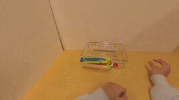
视觉工具实际返回图片 2
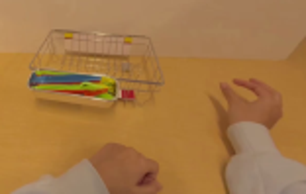
视觉工具实际返回图片 3
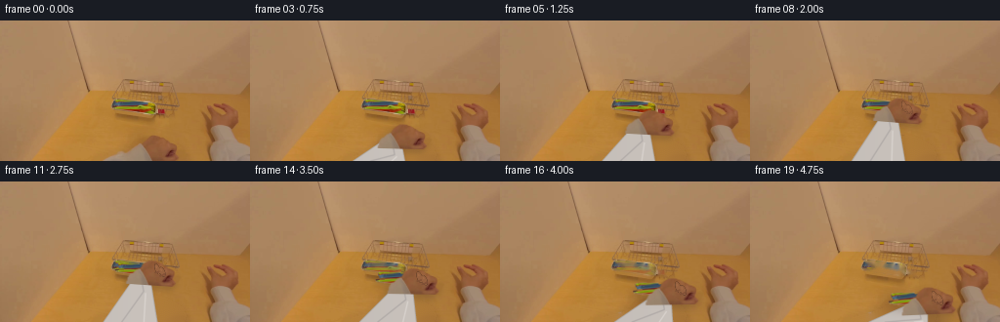
视觉工具实际返回图片 4
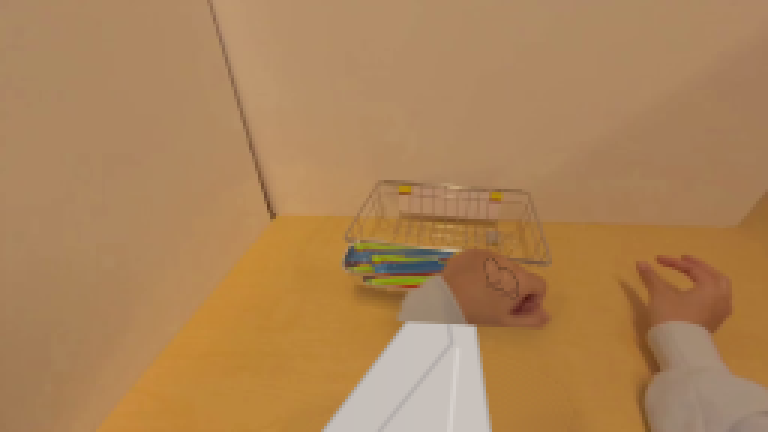
视觉工具实际返回图片 5
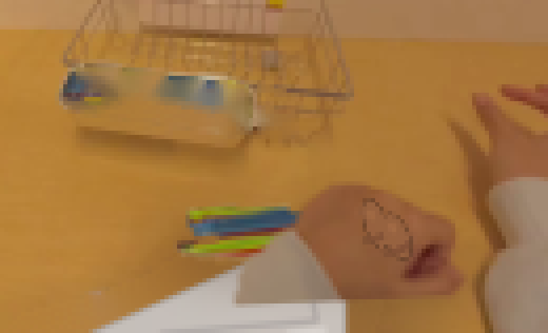
视觉工具实际返回图片 6
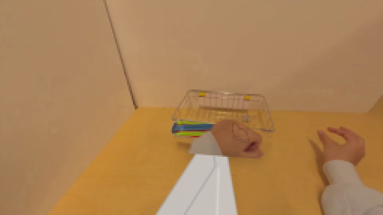
视觉工具实际返回图片 7
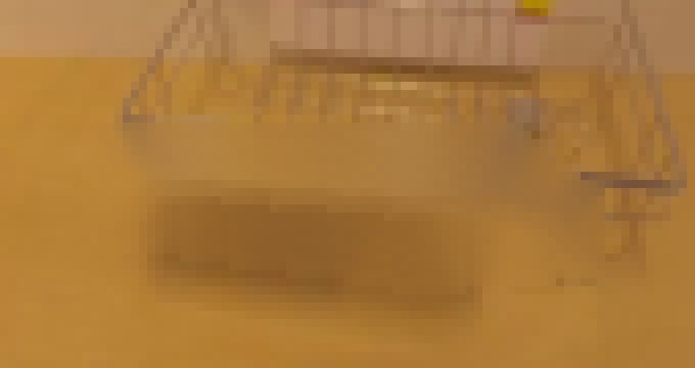
视觉工具实际返回图片 8
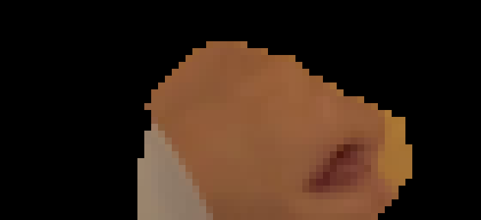
视觉工具实际返回图片 9
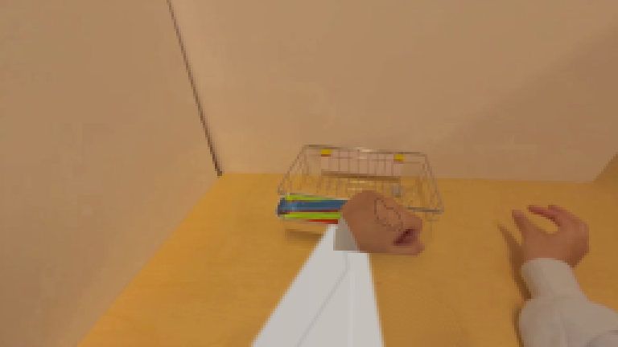
视觉工具实际返回图片 10
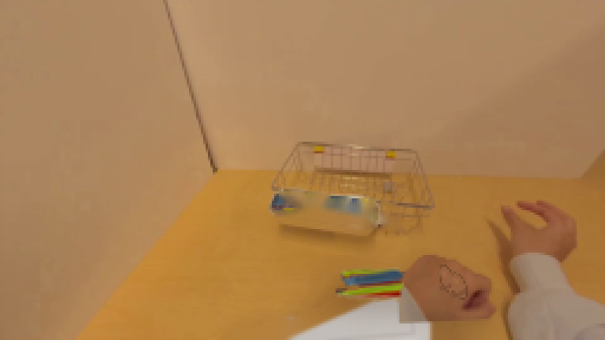
保存候选 3 份；完成命令 15 次；可验证图片返回 10 张。原始 API 响应与完整日志保留在本地。